Наша команда нашла для вас отличный обзор на эти часы. Советуем вам посмотреть его, чтобы лучше понимать, на что они способны и подойдут ли вам.
Часы
Добро пожаловать на страницу умных часов, где время становится гораздо более, чем просто отсчетом минут и секунд. Здесь мы погружаемся в захватывающий мир инноваций, стиля и передовых технологий, представленных в часах различных компаний. От элегантных дизайнов до выдающихся функций, каждая модель расскажет свою уникальную историю о том, как современные технологии интегрируются в повседневную жизнь. Давайте вместе исследовать, как эти умные часы делают наше время более эффективным, стильным и впечатляющим. Приготовьтесь окунуться в мир интеллектуальных решений, представленных лучшими брендами, и выберите свой идеальный компаньон в невероятном путешествии времени и технологий.
Галерея
Добро пожаловать в виртуальную галерею умных часов, где каждый момент времени становится поводом для восхищения передовыми технологиями и стильным дизайном. Эта коллекция представляет собой искусство функциональности, где каждый временной инструмент становится неотъемлемой частью вашего умного образа жизни.Приготовьтесь к визуальному путешествию, где каждая фотография расскажет историю о том, как умные часы становятся неотъемлемым аксессуаром в повседневной жизни.
- 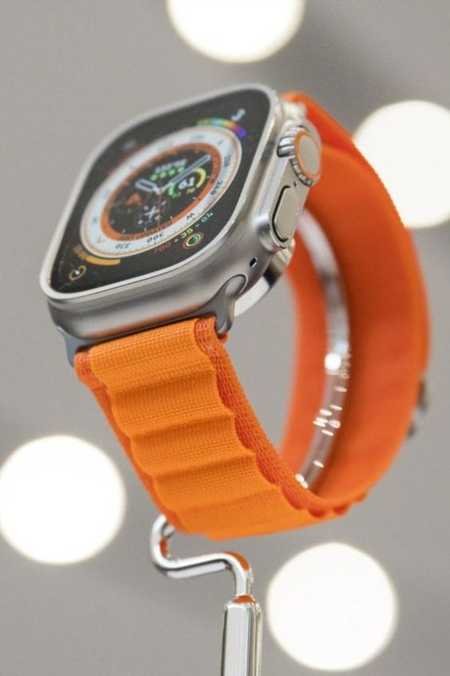
- 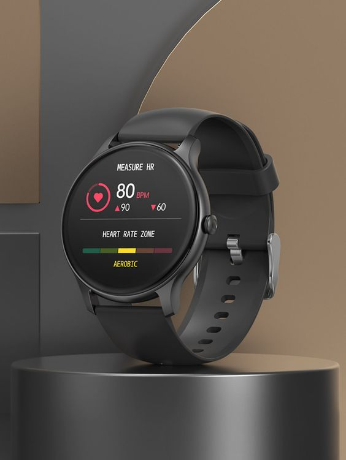
- 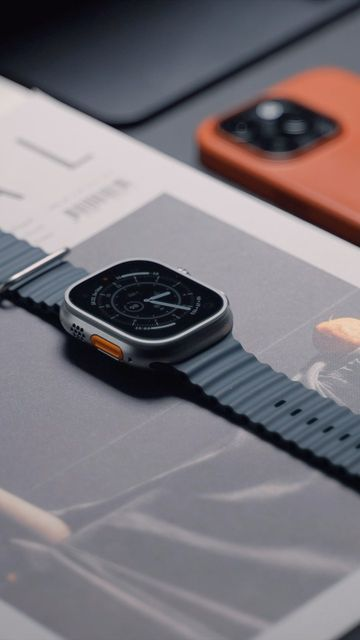
- 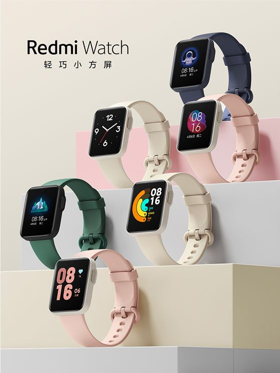
- 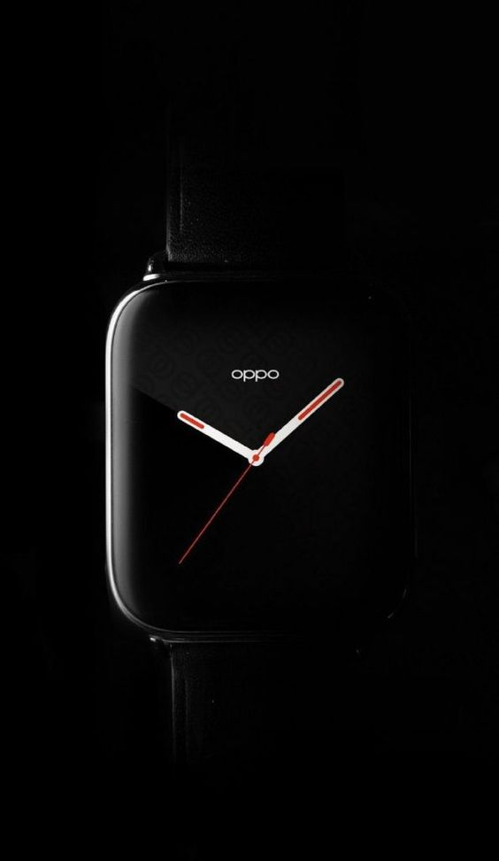
- 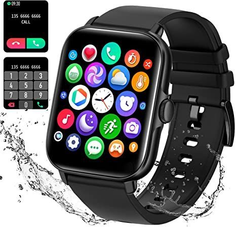
- 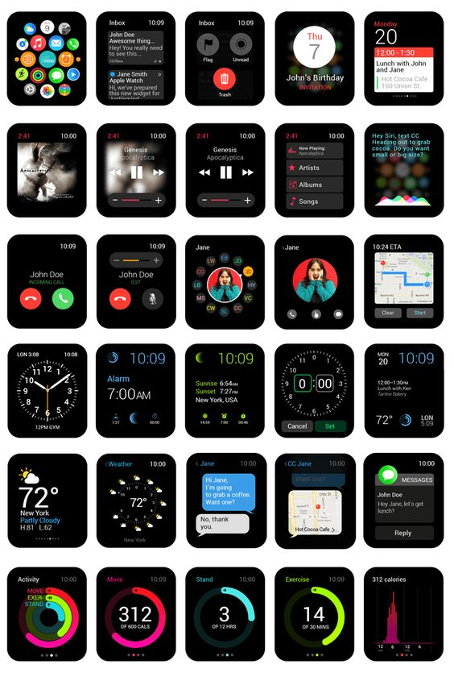
- 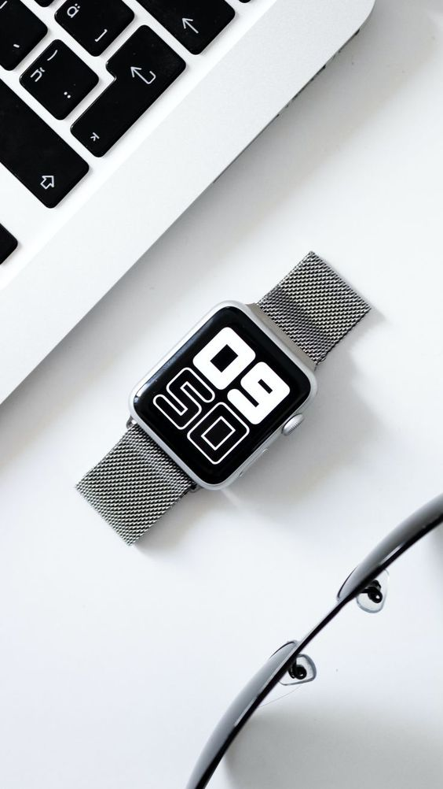
- 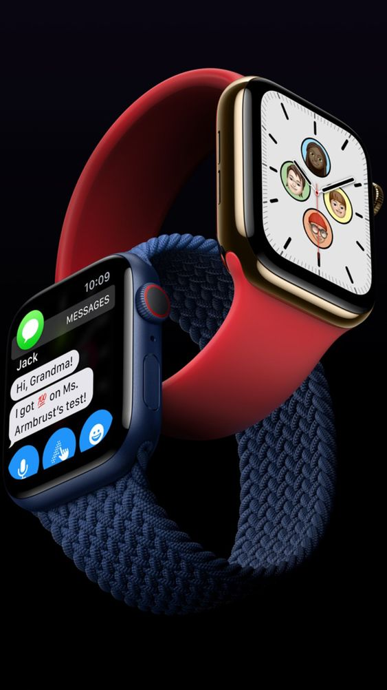
Часы Apple
Ссылка на официальный сайт Apple 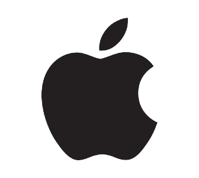Приветствуем вас в захватывающем мире инноваций и стиля, где каждая деталь создана с любовью к совершенству. В этом уголке технологической эстетики представляем вам компанию, ставшую символом передовых решений и элегантности – Apple. Среди гармонии устройств, которые преобразили наш повседневный опыт, особое место занимают умные часы от Apple. Эти временные хранители не только отмеряют часы и минуты, но и открывают перед вами врата к беспрецедентной связности и инновациям. От уникальных дизайнов до передовых функций заботы о здоровье, умные часы Apple стали неотъемлемым спутником в повседневной жизни. Давайте вместе погружаться в мир технологий, где каждый момент на вашем запястье — это совершенство, созданное Apple. Добро пожаловать в будущее времени, добро пожаловать в мир умных часов Apple.
Для умных часов компании Aplle создано множество ремешков, которые подходят ко всем часам. Ниже вы можете посмотреть некоторые из них.
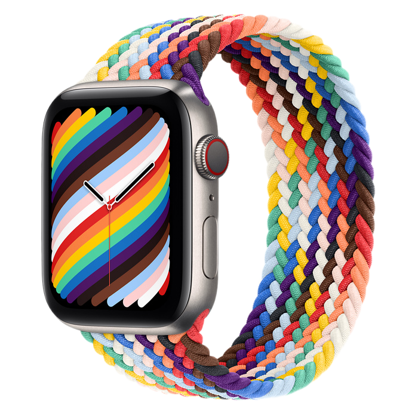
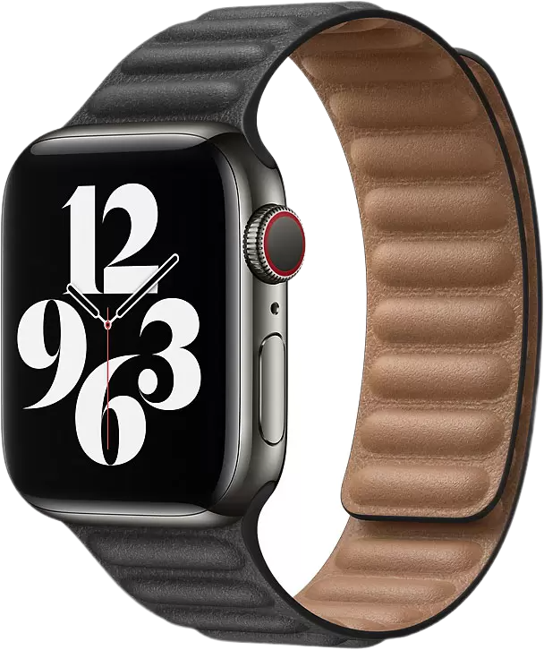
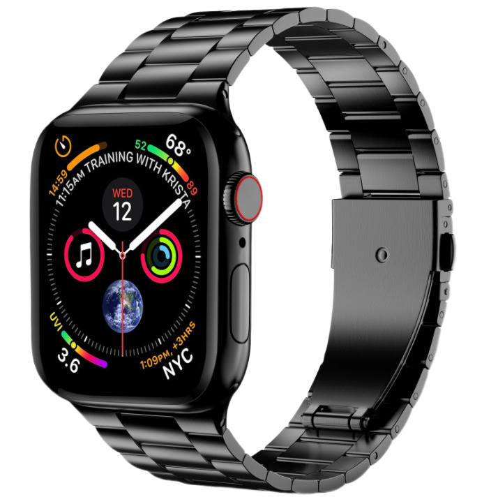
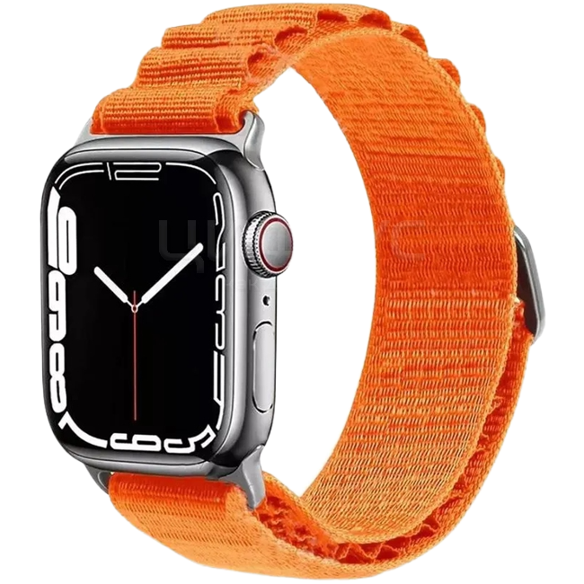
Apple Watch Ultra 2
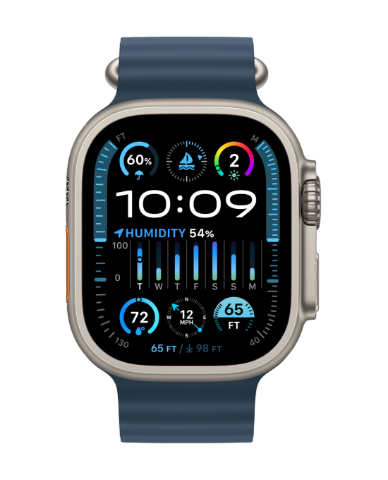
Ультимативные часы Apple в первую очередь предназначены для атлетов, пловцов и экстремальных путешественников. В то же время модель можно рекомендовать всем, кто хочет получить максимум возможностей, невзирая на цену. Apple Watch Ultra 2 стоят на голову выше всех обычных моделей в линейке, полностью оправдывая своё название. Большой ударопрочный корпус из титана с плоским сапфировым стеклом, увеличенный аккумулятор, дополнительная кнопка действия и специальные ремешки под разные нужды. По функциям и сенсорам часы имеют всё то же, что и Ultra 1‑го поколения или Series 9, но также могут похвастаться высокоточным GPS‑модулем, глубиномером, более крупным дисплеем, имеющим рекордно большой запас яркости, сиреной для экстренных ситуаций. Кроме того, Apple Watch Ultra могут предложить эксклюзивные циферблаты с глубиномером или ночным режимом.
Apple Watch Series 8
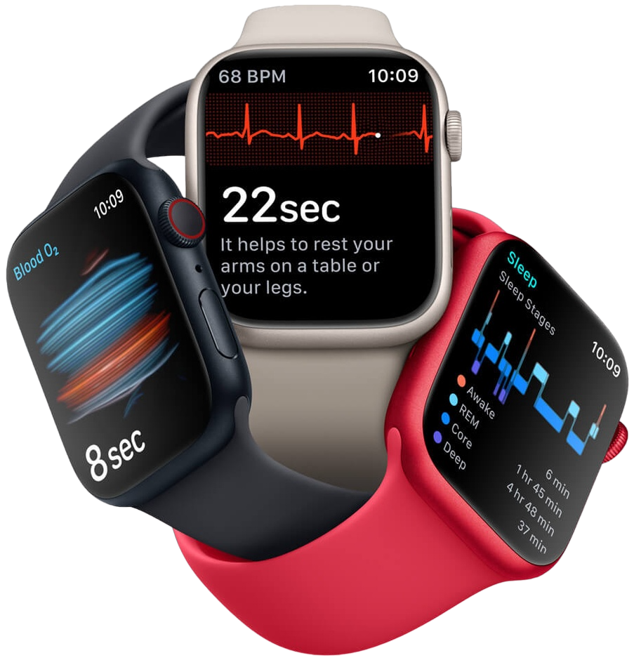
Элегантные умные часы с большим ярким дисплеем Always‑On в тонком корпусе. Помогут следить за здоровьем и физической формой, отслеживать женский цикл и планировать семью. Придут на помощь в экстренных ситуациях, связавшись со службой спасения или отмеченными заранее контактами. Могут быть кастомизированы под каждого пользователя с помощью выбора подходящего экрана и ремешка. Для тех, кто не любит стандартные решения, часы Apple Watch Series 8 GPS станут настоящей находкой. В них можно выбрать вариант отображения дисплея, оттенок и материал ремешка, сделав устройство по-настоящему уникальным. Тонкий алюминиевый корпус толщиной 41 мм не боится пыли и погружений в воду на глубину до 50 м — благодаря классам защиты IP6 и WR50, а переднее стекло с легкостью выдерживает падения и удары. Ключевой особенностью гаджета стал всегда включенный дисплей Retina, изображение на котором отлично читается независимо от положения руки пользователя и степени освещенности.
Наша команда нашла для вас отличный обзор на эти часы. Советуем вам посмотреть его, чтобы лучше понимать, на что они способны и подойдут ли вам.
Часы Garmin
Ссылка на официальный сайт GarminGarmin — американская компания, известная своими инновационными умными часами, объединяющими выдающиеся функции спортивного трекера с GPS-навигацией. Отслеживание пульса, шагов, сна, водостойкость для водных видов спорта, а также интеграция с приложениями для мобильных устройств делают часы Garmin незаменимыми для активного образа жизни. Спроектированные с прочными материалами, они не только функциональны, но и долговечны, предоставляя пользователям надежный компаньон для занятий спортом и приключений на открытом воздухе.
Garmin не отстаёт от Apple, и для их умных часов также можно купить множество различных ремешков. Ниже вы можете посмотреть на некоторые из них.
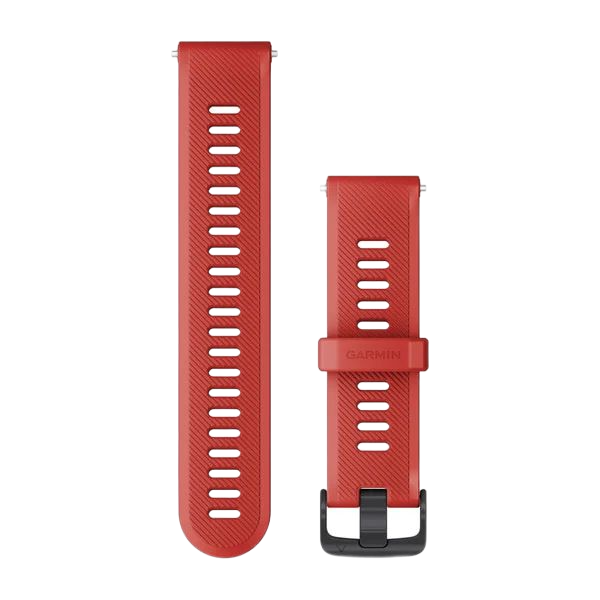
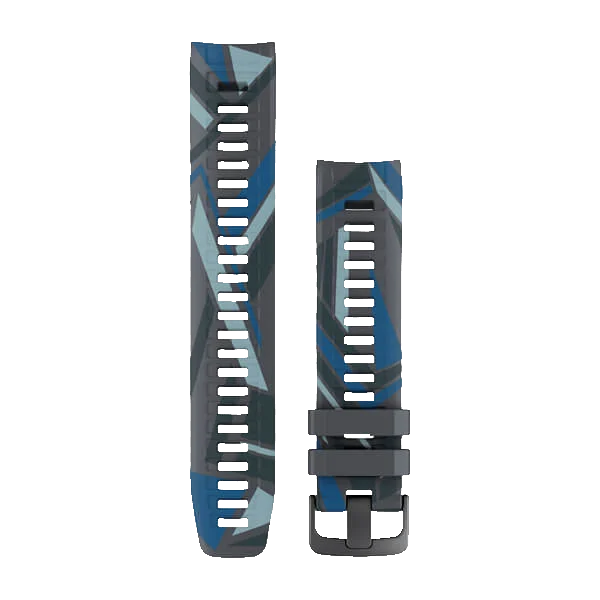
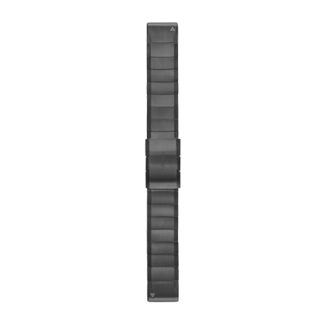
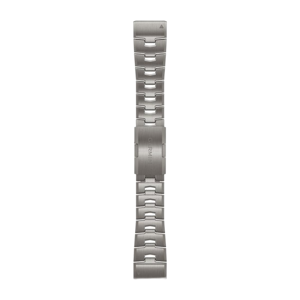
Garmin Forerunner 265
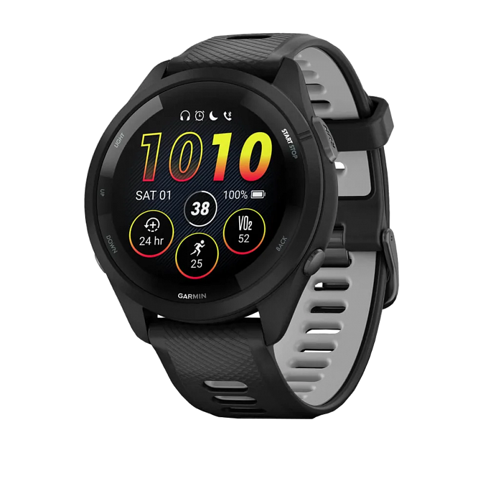
Garmin Forerunner 265 – это самые новые беговые часы Garmin среднего уровня, которые пришли на смену модели Forerunner 255. Основным изменением, которое Garmin внес в часы, стал экран, который теперь является ярким сенсорным AMOLED-дисплеем. Модель Forerunner 265 поставляется в двух разных размерах – Forerunner 265 имеет 1,3-дюймовый дисплей с разрешением 416 x 416 пикселей, а Forerunner 265S имеет 1,1-дюймовый дисплей с разрешением 360 x 360. Во время тестирования мы были поражены тем, насколько яркими были эти маленькие часы даже под прямыми солнечными лучами. Это отличные часы для большинства бегунов. Они имеют много тренировочных инструментов, присущих более дорогим часам на рынке, но при этом они намного доступнее, чем Fenix или Forerunner 955/965. Яркий сенсорный экран также делает их более похожими на смарт-часы, если вы планируете носить Garmin 24/7.
Наша команда нашла для вас отличный обзор на эти часы. Советуем вам посмотреть его, чтобы лучше понимать, на что они способны и подойдут ли вам.
Garmin Forerunner 965
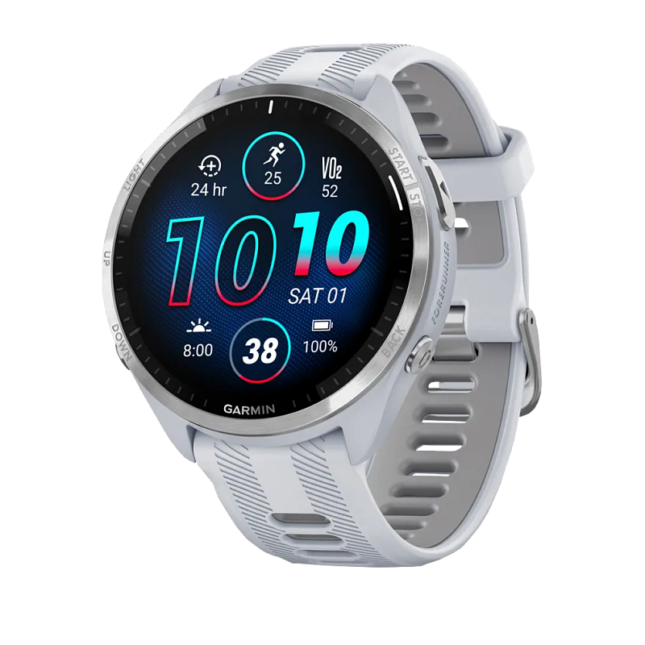
Garmin Forerunner 965 – это обновленная версия модели Forerunner 955. Это беговые часы наивысшего уровня, и, возможно, лучший Forerunner, который мы когда-либо тестировали. Garmin Forerunner 965 обладает всеми высокотехнологичными тренировочными функциями модели Forerunner 955, а также одним большим обновлением – сенсорным AMOLED-экраном. По сравнению с Fenix 7, этот яркий экран облегчает использование полноцветных карт на Forerunner 965. Часы также оснащены многодиапазонным GPS, что делает их более точнымы в районах с плохим приемом GPS. AMOLED-экран имеет разрешение 454 x 454 пикселей; он чрезвычайно ярок и хорошо виден при любых погодных условиях. Как и во всех часах Garmin с сенсорными экранами, сенсор автоматически отключается во время активности, позволяя вам запускать, останавливать, ставить на паузу и пролистывать часы с помощью кнопок. Всего кнопок пять – три слева, две справа. Ими легко пользоваться и нажимать потными пальцами или в перчатках.
Наша команда нашла для вас отличный обзор на эти часы. Советуем вам посмотреть его, чтобы лучше понимать, на что они способны и подойдут ли вам.
Часы Huawei
Ссылка на официальный сайт HuaweiHuawei - мировой лидер в сфере информационных технологий и телекоммуникаций, представляющий инновационные продукты высокого качества. В области носимой электроники компания Huawei значительно выделяется благодаря своей линейке умных часов, в которой сочетаются элегантный дизайн и передовые технологии. Умные часы Huawei сочетают в себе стиль и функциональность, предоставляя пользователям широкий спектр возможностей. Среди ключевых характеристик можно выделить инновационные технологии, элегантный дизайн, отличное качество изготовления, функциональность для здоровья и фитнеса, а также совместимость и интеграция с мобильными устройствами на базе Android и iOS. Часы Huawei легко интегрируются с мобильными устройствами, обеспечивая удобное управление устройствами и максимальное взаимодействие с приложениями. С умными часами Huawei пользователи получают не только стильный аксессуар, но и надежного спутника для повседневной жизни, способного эффективно сочетать функциональность, эстетику и передовые технологии.
Для умных часов Huawei также можно купить различные ремешки. Ниже вы можете посмотреть на некоторые из них.
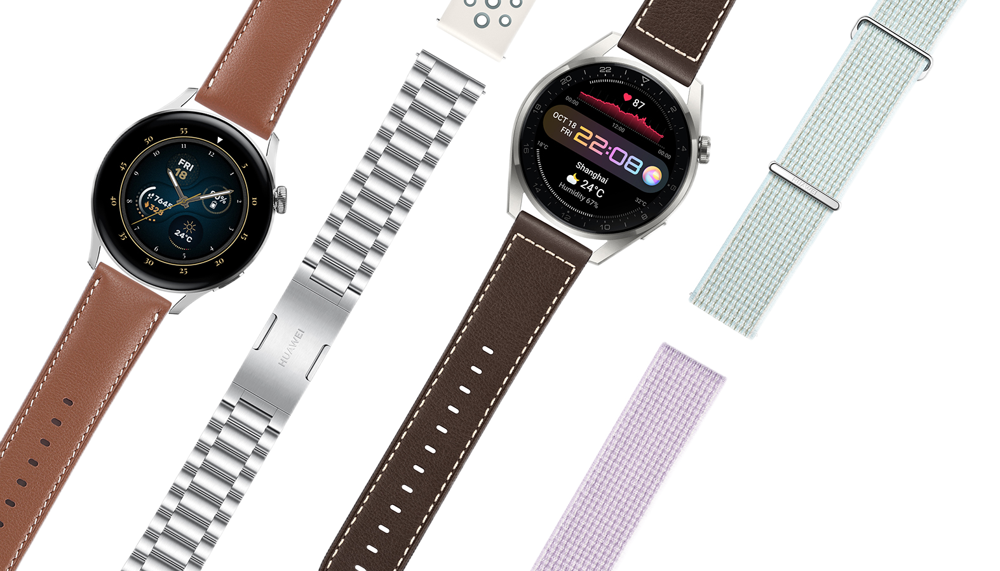
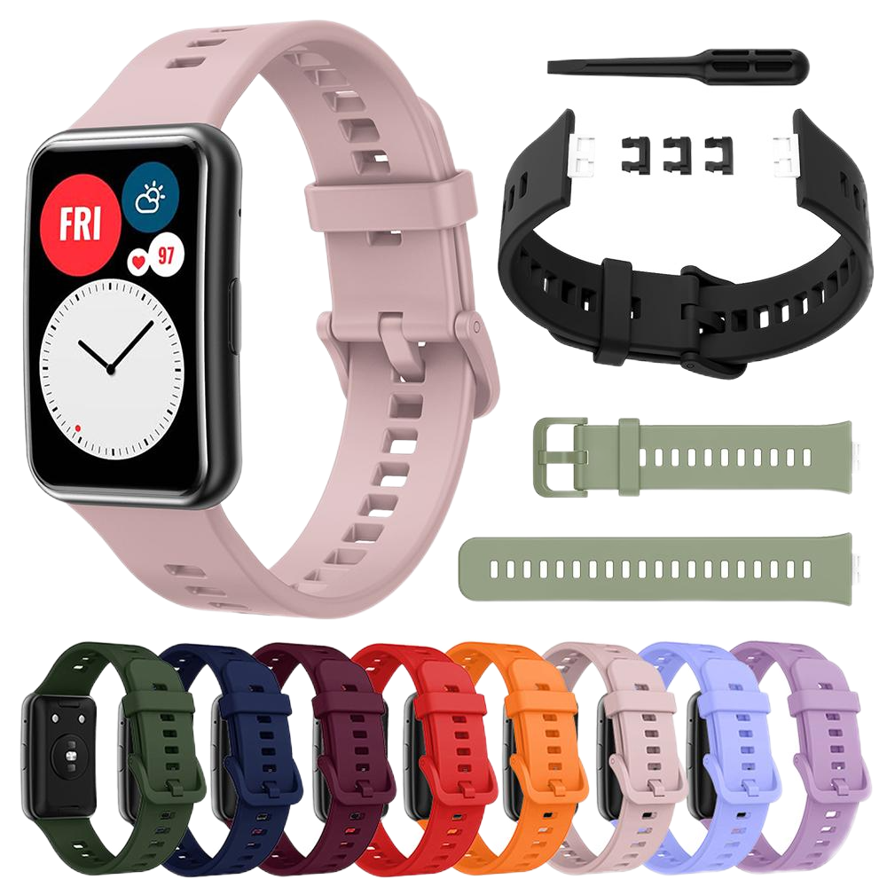
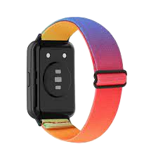
Huawei Watch 4 Pro
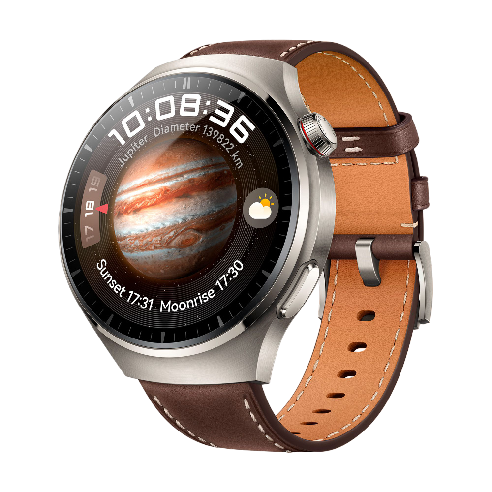
Флагман бренда и, по совместительству, единственная модель с поддержкой eSIM. Часы имеют шикарный корпус из титанового сплава с сапфировым стеклом и LTPO дисплеем на 1.5 дюйма. Цифровая коронка не просто нажимается, а реагирует на вращение, прокручивая списки или масштабируя иконки меню. Есть влагозащита 5АТМ, которая подходит для плавания. В общем тактильно и по материалам – это премиум. По технологиям все то же неплохо. Наличие eSIM дает возможность звонить и пользоваться навигацией в любом месте, без привязки смартфону. Гаджет мониторит все показатели организма (включая ЭКГ), поддерживает более 100 режимов тренировок, бесконтактную оплату и работает до 10 дней в режиме приема уведомлений. Если включить AoD и ежедневно заниматься с использованием GPS, то батарейки хватит на 4 суток. Также в продаже есть более доступные Watch 4, которые отличаются корпусом из нержавеющей стали. По характеристикам обе модели идентичны.
Наша команда нашла для вас отличный обзор на эти часы. Советуем вам посмотреть его, чтобы лучше понимать, на что они способны и подойдут ли вам.
- Обновления
- Был обновлён дизайн главной страницы
- Теперь, чтобы оставить отзыв, нужно ввести капчу